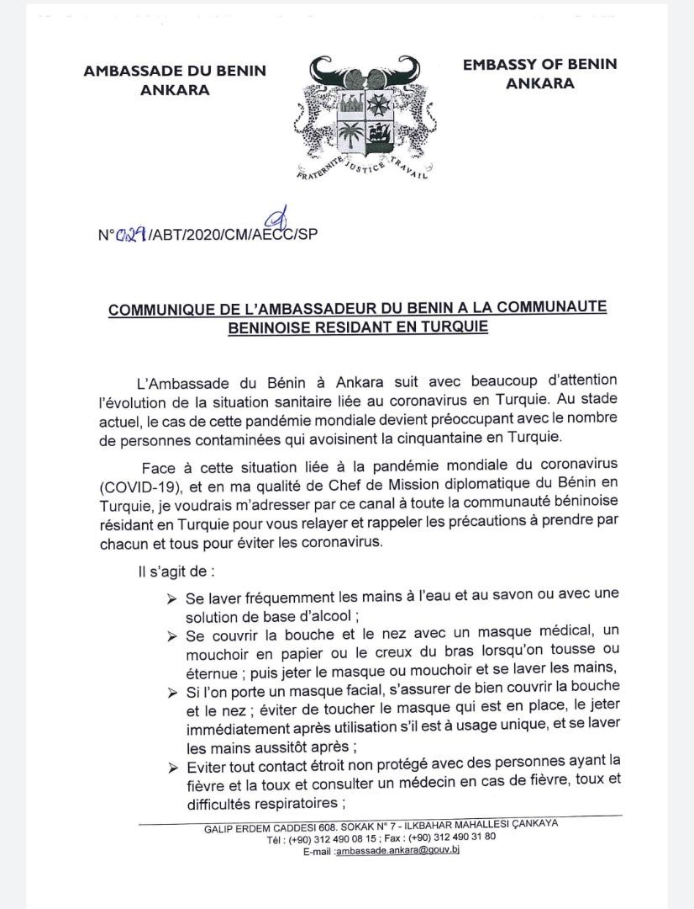
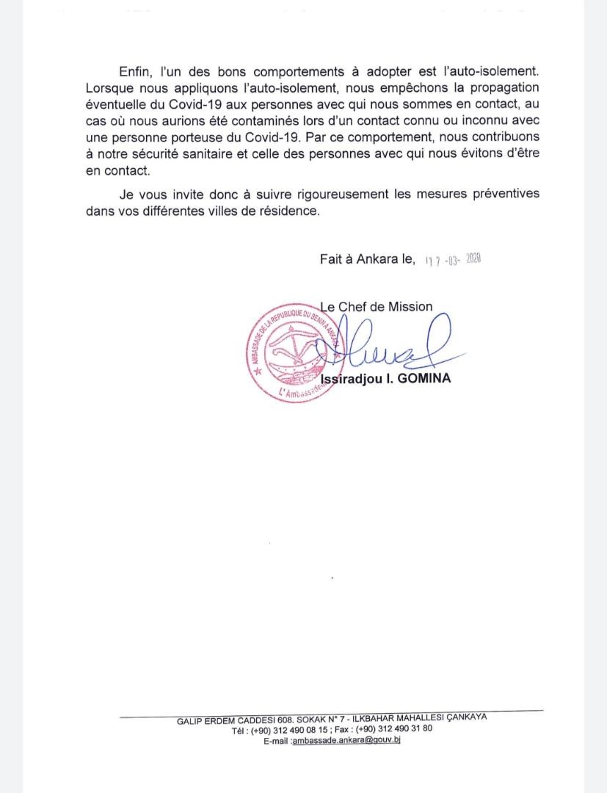

Depuis peu la Turquie ; comme bon nombre de pays à travers le monde est frappée par le Corona Virus COVID-19. Dès l'apparition officielles des premiers cas, le nombre de personnes contaminées ne cesse de s’accroitre.
En savoir plus
COMMUNIQUE DU BUREAU EXECUTIF DU BRT
Depuis peu la Turquie ; comme bon nombre de pays à travers le monde est frappée par le Corona Virus COVID-19. Dès l'apparition officielles des premiers cas, le nombre de personnes contaminées ne cesse de s’accroitre.
Vu la rapidité avec laquelle la contagion du Covid 19 se propage ; le Bureau du BRT convie l'ensemble de ses membres au respect strict des instructions d’hygiènes tel que le recommande les autorités sanitaires. À titre de rappel, il s'agit de :
En tout état de cause, nous convions les compatriotes a beaucoup de responsabilités dans cette période que nous traversons. Dans cette même démarche patriotique, nous voudrions exhorter les uns et les autres à sensibiliser les leurs au pays sur les mesures à prendre vis-à-vis du mal afin de les inciter à prendre les dispositions idoines.
Le Bureau tout en vous assurant de sa disponibilité, vous souhaite une pleine santé.
NB : Veuillez retrouver ci-joint la déclaration de l’ambassade du Bénin à ce propos.
 
Selon son calendrier,le bureau exécutif du BRT mène diverse actions, en voici quelques unes
Le Bureau du BRT a ensemble avec l'ambassade du Bénin en Turquie acceuilli le président TALON lors de sa visite de travail en Turquie.
Les Béninois en Turquie sont venus de tous les coins pour fêter l'anniversaire de l'indépendance de notre chère patrie le Bénin.
Nos compatriotres d'Ankara ont présenté le Bénin au cours d'une manifestation culturelle comme cela se fait dans d'autres villes aussi.